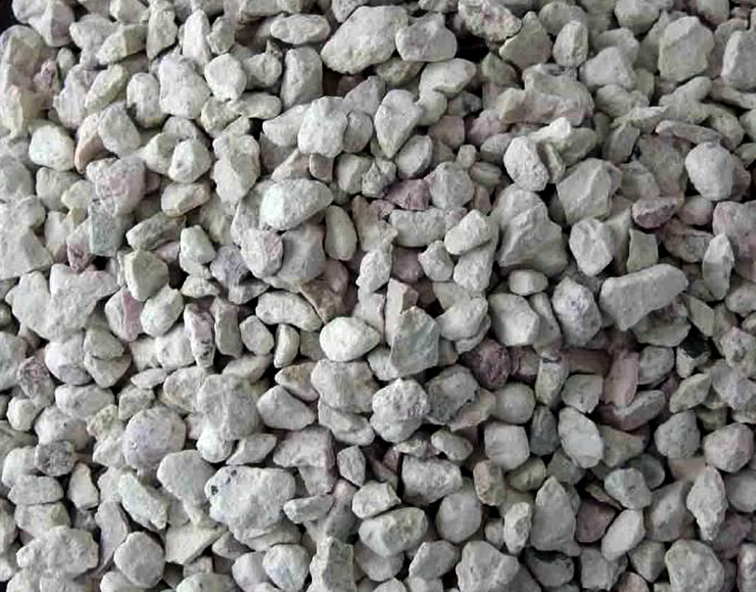
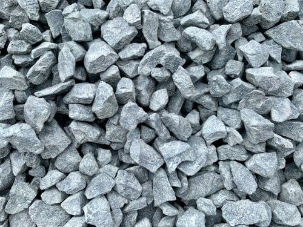

(+56) 9 0000 0000
(+56) 9 0000 0000 info@materias-primasChile.cl - otro@Materias-primasChile.cl
info@materias-primasChile.cl - otro@Materias-primasChile.cl

Bentonita
-
La bentonita es ampliamente utilizada como un agente clarificante y estabilizante en la industria alimentaria, ayudando a mejorar la textura y la claridad de productos como vinos, cervezas, jugos y aceites. Como agente clarificante por su capacidad para absorber proteínas y otras partículas en suspensión ayudando a eliminar las impurezas y aclarar los líquidos, mejorando así su aspecto y calidad.
En la refinación de aceites y grasas comestibles para eliminar impurezas, como ácidos grasos libres, pigmentos y compuestos no deseados, mejorando así su estabilidad. Se utiliza tambien como agente estabilizante en emulsiones y suspensiones, ayudando a prevenir la separación de fases y mejorar la consistencia y textura de productos como salsas, aderezos y lácteos. - Se utiliza en la ganadería como un aditivo en los piensos para mejorar la salud intestinal de los animales y prevenir la diarrea y otras enfermedades digestivas. Su capacidad para adsorber toxinas y patógenos ayuda a mantener un ambiente intestinal saludable y a mejorar la eficiencia alimenticia.
En la agricultura se utiliza como un agente de retención de humedad y nutrientes en el suelo, mejorando la disponibilidad de agua y nutrientes para los cultivos. Además, se utiliza en la producción de alimentos como un agente de clarificación y estabilización.
Caliza
- La caliza, con su alto contenido de calcio, se utiliza en la industria alimentaria como un suplemento mineral en productos lácteos, panificación y enriquecimiento de alimentos.
Además, se emplea en la corrección del pH del suelo en la agricultura, garantizando condiciones óptimas para el crecimiento de cultivos y la producción de alimentos nutritivos y saludables.
La caliza se utiliza como fuente de calcio en la alimentación animal, especialmente en aves y rumiantes, para fortalecer los huesos y mejorar la calidad de los huevos y la leche.
Además, la caliza ayuda a corregir el pH del rumen, favoreciendo una digestión adecuada y una mejor absorción de nutrientes. - En la industria alimentaria, la caliza triturada o molida se utiliza como un agente fortificante en una variedad de productos, incluyendo cereales, panes, jugos de frutas, productos horneados, alimentos para bebés y más. Agregar caliza a estos productos aumenta su contenido de calcio, proporcionando una opción conveniente para aquellos que desean aumentar su ingesta de este mineral sin necesidad de consumir suplementos.
En el caso de las leches fortificadas, la caliza se utiliza para enriquecer la leche con calcio, lo que la convierte en una fuente importante de este mineral para aquellos que no consumen lácteos o que buscan una alternativa más rica en calcio. La leche fortificada con calcio es especialmente importante para niños en edad de crecimiento, mujeres embarazadas y lactantes, y personas mayores, que tienen necesidades específicas de calcio para mantener la salud ósea.
Zeolita
- La zeolita se destaca por su capacidad de adsorción de toxinas y contaminantes, utilizándose en la purificación de agua, la eliminación de impurezas en alimentos líquidos y la estabilización de productos alimenticios.
Se ha utilizado tradicionalmente como un remedio natural para la indigestión y el malestar estomacal. Se cree que sus propiedades absorbentes pueden ayudar a neutralizar el exceso de ácido estomacal y aliviar los síntomas de la acidez estomacal, la hinchazón y la incomodidad digestiva.
La zeolita tiene una estructura porosa única que le permite adsorber toxinas, metales pesados y otros compuestos no deseados en el tracto digestivo. Se cree que actúa como una esponja, atrapando estas sustancias y ayudando a eliminarlas del cuerpo de manera segura a través de las heces.
Además de su capacidad para adsorber toxinas, la zeolita también puede tener un efecto beneficioso en la regularidad intestinal. Algunos estudios sugieren que puede ayudar a mejorar la consistencia de las heces y promover la regularidad intestinal al absorber el exceso de agua en el colon.
Materias primas

Zeolita
La zeolita ha ganado popularidad como un suplemento dietético que se utiliza para una variedad de propósitos, incluyendo el alivio de la indigestión y la absorción de toxinas en el tracto digestivo.
Contáctanos ahora mismo para una consulta personalizada.

Bentonita
Las Materias Primas desempeñan roles críticos en la producción de alimentos seguros, saludables y de alta calidad, así como en el cuidado y nutrición del ganado.
Contáctanos ahora mismo para una consulta personalizada.

Caliza
El calcio es un mineral esencial para la salud ósea y dental, así como para la función muscular y nerviosa, y muchos alimentos y suplementos lo incluyen para asegurar una ingesta adecuada.
Contáctanos ahora mismo para una consulta personalizada.